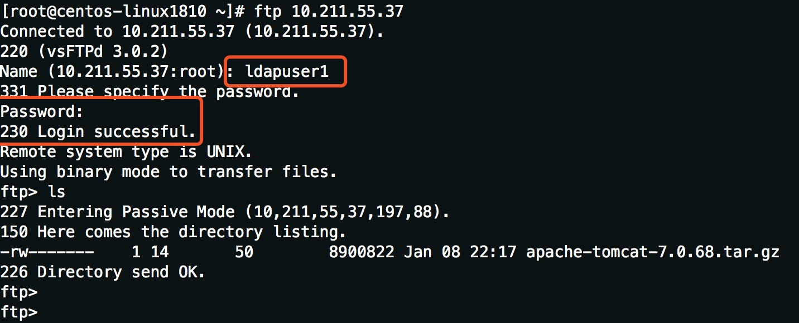

欢迎加入我的Python及Linux运维交流QQ群：==>646452633<==
前言
简要介绍：在LDAP和FTP相关技术的基础上，提出一套基于LDAP和FTP技术的统一身份认证方案和账号管理系统方案，解决FTP系统的统一认证、访问控制和B/S模式下FTP账号管理等问题。
LDAP(Lightweight Directory Access Protocol)是一种基于X.500标准的跨平台的轻量级目录访问协议。它运行在TCP/IP协议上，对Internet有着良好的支持性，采用树状的层次结构来存储数据，具有数据读取速度快，管理方便等特点。LDAP多用于构建统一身份认证系统，集中管理应用信息系统的账号，实现统一用户管理、身份认证、访问控制等功能；可解决多应用系统用户的统一管理、统一认证和统一授权；有助于减少数据冗余，提高数据安全和便于用户操作。
OpenLDAP：OpenLDAP是一款开源的LDAP目录服务产品，可以运行于Linux，Uinx等操作系统。其设计目的是提供一种高效、安全的方法来查询和管理数据。通过使用SASL，SSL来支持强度认证和提供完整性与安全保护，通过使用丰富的功能强大的存取控制手段来控制对权限的操作。
认证机制与流程
VSFTP与LDAP集中认证，主要通过LDAP使用vsftpd.schema定义VSFTP的各项属性，并将FTP账号信息存入LDAP数据库中，当用户向FTP服务器请求认证时，FTP服务器将认证工作交由LDAP服务器处理。
1．FTP用户请求连接并发送账号认证信息。
2．FTP服务器根据pure-ftpd.conf中配置将用户帐号信息转发到LDAP服务器验证。
3．LDAP服务器验证账号密码。
4．LDAP服务器返回验证信息和账号信息（FTPStatus等属性）。
5．FTP服务器根据LDAP返回信息对用户授权（是否允许连接）。
6．FTP服务器向用户返回授权结果。
1.初始化准备
系统：centos7 65位
配置yum源1
2
3
4
5
6
7wget http://mirrors.aliyun.com/repo/Centos-7.repo
cp Centos-7.repo /etc/yum.repos.d/
cd /etc/yum.repos.d/
mv CentOS-Base.repo CentOS-Base.repo.bak
mv Centos-7.repo CentOS-Base.repo
yum clean all
yum makecache
关闭selinux和防火墙1
sed -i ‘/SELINUX/s/enforcing/disabled/’ /etc/selinux/config && setenforce 0&& systemctl disable firewalld.service && systemctl stop firewalld.service && shutdown -r now
2.安装openldap
使用如下命令安装1
yum -y install openldap compat-openldap openldap-clients openldap-servers openldap-servers-sql openldap-devel migrationtools pam_ldap
查看版本1
2
3[root@centos-linux1810 ~]# slapd -VV
@(#) $OpenLDAP: slapd 2.4.44 (Oct 30 2018 23:14:27) $
mockbuild@x86-01.bsys.centos.org:/builddir/build/BUILD/openldap-2.4.44/openldap-2.4.44/servers/slapd
3.配置openldap
3.1设置OpenLDAP的管理员密码
1 | slappasswd -s 123456 |
保存输出后的字段，等会会在配置文件中会使用到。
3.2修改olcDatabase={2}hdb.ldif文件
vim /etc/openldap/slapd.d/cn\=config/olcDatabase\={2}hdb.ldif
修改如下两行内容，并增加一行1
2
3olcSuffix: dc=myldap,dc=com
olcRootDN: cn=Manager,dc=myldap,dc=com
olcRootPW: {SSHA}SWksXFfh42io+UQqEgWXvc/OQzvjeEcJ
注意：其中cn=Manager中的Manager表示OpenLDAP管理员的用户名，而olcRootPW表示OpenLDAP管理员的密码
3.3修改olcDatabase={1}monitor.ldif文件
vim /etc/openldap/slapd.d/cn\=config/olcDatabase\={1}monitor.ldif
修改如下内容1
2olcAccess: {0}to * by dn.base="gidNumber=0+uidNumber=0,cn=peercred,cn=extern
al,cn=auth" read by dn.base="cn=Manager,dc=myldap,dc=com" read by * none
注意：该修改中的dn.base是修改OpenLDAP的管理员的相关信息的
验证OpenLDAP的基本配置，使用如下命令：1
slaptest -u
通过上述命令，我们可以很明显的看出OpenLDAP的基本配置是没有问题。
启动OpenLDAP服务，使用如下命令：1
2
3systemctl enable slapd
systemctl start slapd
systemctl status slapd
OpenLDAP默认监听的端口是389，下面我们来看下是不是389端口，如下：1
netstat -tpln | grep 389
3.4.配置OpenLDAP数据库
OpenLDAP默认使用的数据库是BerkeleyDB，现在来开始配置OpenLDAP数据库，使用如下命令：1
2
3cp /usr/share/openldap-servers/DB_CONFIG.example /var/lib/ldap/DB_CONFIG
chown ldap:ldap -R /var/lib/ldap
chmod 700 -R /var/lib/ldap
注意：/var/lib/ldap/就是BerkeleyDB数据库默认存储的路径。
3.5.导入基本Schema
1 | ldapadd -Y EXTERNAL -H ldapi:/// -f /etc/openldap/schema/cosine.ldif |
3.6.修改migrate_common.ph文件
vim /usr/share/migrationtools/migrate_common.ph1
2
3$DEFAULT_MAIL_DOMAIN = "myldap.com";
$DEFAULT_BASE = "dc=myldap,dc=com";
$EXTENDED_SCHEMA = 1;
到此OpenLDAP的配置就已经全部完毕，下面我们来开始添加用户到OpenLDAP中。
4.添加用户及用户组
默认情况下OpenLDAP是没有普通用户的，但是有一个管理员用户。管理用户就是前面我们刚刚配置的root。
现在我们把系统中的用户，添加到OpenLDAP中。为了进行区分，我们现在新加两个用户ldapuser1和ldapuser2，和两个用户组ldapgroup1和ldapgroup2，如下：
添加用户组，使用如下命令：1
2groupadd ldapgroup1
groupadd ldapgroup2
添加用户并设置密码，使用如下命令1
2
3
4useradd -g ldapgroup1 ldapuser1
useradd -g ldapgroup2 ldapuser2
echo ‘123456’ | passwd –-stdin ldapuser1
echo ‘123456’ | passwd –-stdin ldapuser2
把刚刚添加的用户和用户组提取出来，这包括该用户的密码和其他相关属性，如下1
2grep “:10[0-9][0-9]” /etc/passwd > /root/users
grep “:10[0-9][0-9]” /etc/group > /root/groups
根据上述生成的用户和用户组属性，使用migrate_passwd.pl文件生成要添加用户和用户组的ldif，如下：1
2
3
4/usr/share/migrationtools/migrate_passwd.pl /root/users > /root/users.ldif
/usr/share/migrationtools/migrate_group.pl /root/groups > /root/groups.ldif
cat users.ldif
cat groups.ldif
注意：后续如果要新加用户到OpenLDAP中的话，我们可以直接修改users.ldif文件即可。
5.导入用户及用户组到OpenLDAP数据库
配置openldap基础的数据库，如下：cat base.ldif1
2
3
4
5
6
7
8
9
10
11
12
13
14
15
16
17
18
19dn: dc=myldap,dc=com
dc: myldap
objectClass: top
objectClass: domain
dn: cn=Manager,dc=myldap,dc=com
cn: Manager
objectClass: organizationalRole
description: Directory Manager
dn: ou=People,dc=myldap,dc=com
ou: People
objectClass: top
objectClass: organizationalUnit
dn: ou=Group,dc=myldap,dc=com
ou: Group
objectClass: top
objectClass: organizationalUnit
导入基础数据库，使用如下命令：1
ldapadd -x -w "123456" -D "cn=Manager,dc=myldap,dc=com" -f /root/base.ldif
导入用户到数据库，使用如下命令：1
ldapadd -x -w "123456" -D "cn=Manager,dc=myldap,dc=com" -f /root/users.ldif
导入用户组到数据库，使用如下命令1
ldapadd -x -w "123456" -D "cn=Manager,dc=myldap,dc=com" -f /root/groups.ldif
6.把OpenLDAP用户加入到用户组
尽管我们已经把用户和用户组信息，导入到OpenLDAP数据库中了。但实际上目前OpenLDAP用户和用户组之间是没有任何关联的。
如果我们要把OpenLDAP数据库中的用户和用户组关联起来的话，我们还需要做另外单独的配置。
现在我们要把ldapuser1用户加入到ldapgroup1用户组，需要新建添加用户到用户组的ldif文件，如下：
cat users_to_groups.ldif1
2
3
4dn: cn=ldapgroup1,ou=Group,dc=myldap,dc=com
changetype: modify
add: memberuid
memberuid: ldapuser1
1 | ldapadd -x -w "123456" -D "cn=Manager,dc=myldap,dc=com" -f /root/users_to_groups.ldif |
查询添加的OpenLDAP用户组信息，如下：1
ldapsearch -LLL -x -D 'cn=Manager,dc=myldap,dc=com' -w "123456" -b 'dc=myldap,dc=com' 'cn=ldapgroup1'
7.开启OpenLDAP日志访问功能
默认情况下OpenLDAP是没有启用日志记录功能的，但是在实际使用过程中，我们为了定位问题需要使用到OpenLDAP日志。
新建日志配置ldif文件，如下：
cat loglevel.ldif1
2
3
4dn: cn=config
changetype: modify
replace: olcLogLevel
olcLogLevel: stats
导入到OpenLDAP中，并重启OpenLDAP服务，如下：1
2ldapmodify -Y EXTERNAL -H ldapi:/// -f /root/loglevel.ldif
systemctl restart slapd
修改rsyslog配置文件，并重启rsyslog服务，如下：
vim /etc/rsyslog.conf1
2local4.* /var/log/slapd.log
systemctl restart rsyslog
8.安装和配置LDAP管理工具PHPldapadmin
首先安装apache和php1
yum -y install httpd php php-ldap php-gd php-mbstring php-pear php-bcmath php-xml
下载安装包phpldapadmin-1.2.3.tgz1
2
3
4
5
6tar zxvf phpldapadmin-1.2.3.tgz
cp -r phpldapadmin-1.2.3 /var/www/html/
cd /var/www/html/
mv phpldapadmin-1.2.3 phpldapadmin
cd phpldapadmin/config/
cp config.php.example config.php
vim config.php1
2
3
4
5
6
7
8
9
10$servers = new Datastore();
$servers->newServer('ldap_pla');
$servers->setValue('server','name','My LDAP Server');
$servers->setValue('server','host','10.211.55.37');
$servers->setValue('server','port',389);
$servers->setValue('server','base',array('dc=myldap,dc=com'));
$servers->setValue('login','auth_type','session');
$servers->setValue('login','bind_id','cn=Manager,dc=myldap,dc=com');
$servers->setValue('login','bind_pass','123456');
$servers->setValue('server','tls',false);
启动httpd，登陆phpldapadmin,在浏览器输入
systemctl start httpd
http://10.211.55.37/phpldapadmin
9.配置vsftpd
1 | yum install -y vsftpd |
vim /etc/nslcd.conf1
2
3uri ldap://10.211.55.37/
base dc=myldap,dc=com
ssl no
重启nslcd服务
systemctl restart nslcd
修改ldap.conf
vim /etc/openldap/ldap.conf1
2
3
4
5host 10.211.55.37
BASE dc=myldap,dc=com
URI ldap://10.211.55.37
binddn cn=Manager,dc=myldap,dc=com
bindpw 123456
vim /etc/pam.d/vsftpd
添加以下两行1
2auth required pam_ldap.so
account required pam_ldap.so
修改vsftpd配置文件vim /etc/vsftpd/vsftpd.conf1
2
3
4
5
6
7
8
9
10
11
12
13
14
15
16
17
18
19
20anonymous_enable=NO
local_enable=YES
write_enable=YES
local_umask=022
anon_upload_enable=YES
anon_mkdir_write_enable=YES
dirmessage_enable=YES
xferlog_enable=YES
connect_from_port_20=YES
xferlog_std_format=YES
chroot_local_user=YES
listen=YES
listen_ipv6=NO
pam_service_name=vsftpd
userlist_enable=YES
tcp_wrappers=YES
guest_enable=YES
guest_username=ftp
local_root=/opt/ftpdata
allow_writeable_chroot=YES
systemctl restart vsftpd
